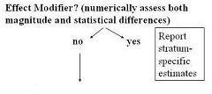

Interaction - Effect Modifier
Lead Author(s): Jeff Martin, MD
Definition of Interaction
When the magnitude of a measure of association
- between exposure and disease
- meaningfully differs according to the value of some third variable.
The Stanton example with smoking, caffeine use, and delayed conception illustrates interaction,
- which is what we call the situation when a particular measure of association (between an exposure and disease)
- For example, a risk ratio) meaningfully differs according to the level of some third variable.
One can look at a graphical approach to interaction.
Synonyms for Interaction
- Effect-measure modification
Proper Terminology
In the Stanton example of caffeine use, smoking, and delayed conceception we would say:
"Caffeine use modifies the effect of smoking on the risk for delayed conception."
or
"There is interaction between caffeine use and smoking in the risk for delayed conception."
or
"Caffeine is an effect modifier in the relationship between smoking and delayed conception."
Third Variable: Effect Modifiers
When the third variable is not an intermediary variable, you have to ask whether the third variable is an effect modifier?
- If you have strong enough evidence to report interaction of a clinically meaningful magnitude, then you should report the association between the exposure and disease in terms of stratum-specific estimates based on the effect modifier.

So, functionally, what you do is to look for effect modification and remember you do this by stratifying upon levels or categories of the third level.
The decision as to whether you will declare or ignore interaction is a decision based on clinical, statistical, and prractical considerations.
In order to form stratum specifc estimates, you may have to adjust form a summary of the unconfounded stratum-specific estimates.
Interaction Is Everywhere
Interaction is everywhere but in practice to date, it is difficult to document these factors.
- One hope of the genomics revolution us that we will be able to find these different host susceptibility factors.
Susceptibility to infectious diseases
Example susceptibility to infectious diseases:
As an example from infectious diseases, if the exposure is sexual activity and the outcome is HIV infection, we know that certain persons are more apt to become infected than others. One such effect modifier that has been discovered is the presence of a particular chemokine receptor phenotype.
Susceptibility to non-infectious diseases
Example susceptibility to non-infectious diseases:
- Exposure: smoking
- Disease: lung cancer
- Effect Modifier: genetic susceptibility to smoke
From non-infectious diseases, we have the example of smoking and lung cancer. Although not well worked out, we can imagine that there are host genetic factors that modify the effect of smoke and make some persons much more susceptible to the harmful effects of smoke.
Susceptibility to drugs (efficacy and side effects)
Example susceptibility to drugs (efficacy and side effects):
- Exposure: effectiveness of drugs
- Disease: therapeutic efficacy or toxicity
- Effect Modifier: genetic susceptibility to drug
How about the effectiveness of drugs? We all suspect there is substantial heterogeneity in terms of how people respond both in terms of therapeutic efficacy and toxicity and that this likely due to various genetically coded susceptibilities. These are just beginning to be described.
Reporting Interactions
When to report or ignore interaction is not clear cut and we can give no absolute rules for this. When to report or ignore is a clinical, statistical, and practical decision.
Guidelines for reporting interactions.